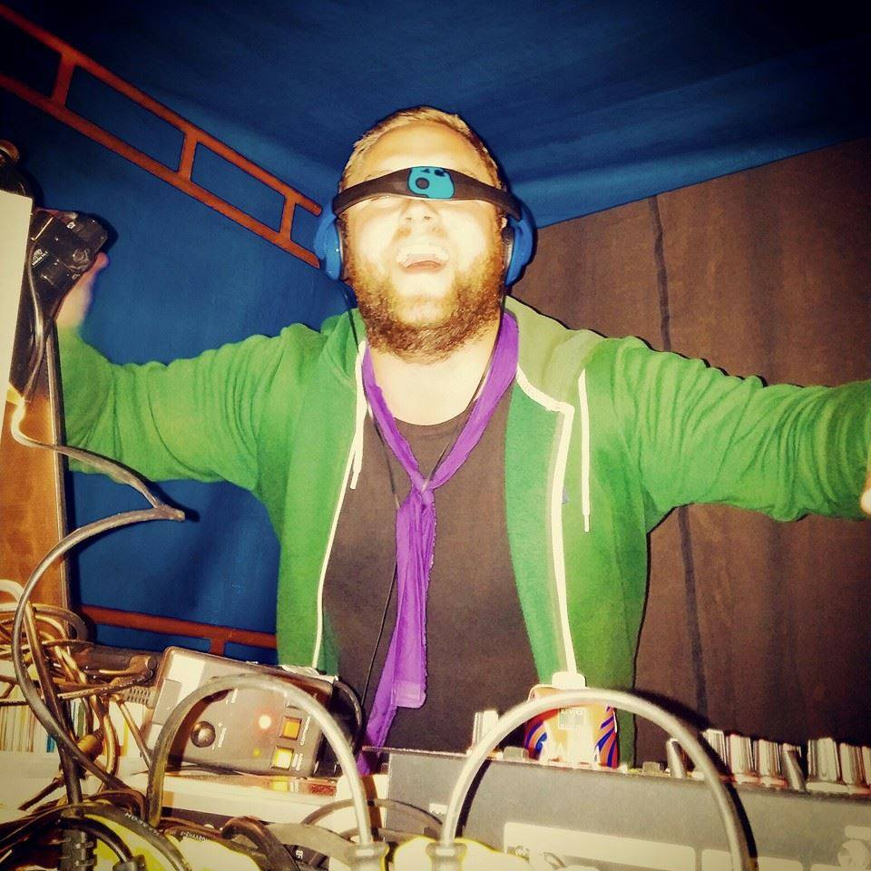

Hej, Mitt namn är Mathias & jag är 24år, på denna sida kommer jag att skriva lite om vem jag är.
Jag kommer ifrån en litet samhälle vid kusten i Skåne vid namn Bjärred som har ett invånarantal på cirka 12'000 personer. Bjärred är mest känt för Långa Bryggan som är en av Europas längsta badbryggor på cirka 500 meter. Men man om inte vet något om Bjärred & hör namnet för första gången så förknippar man det lätt med den forne fotbollbolsspelaren Patrik "Bjärred" Andersson.
Jag skulle vilja beskriva min familj som en typisk kärnfamilj, mamma, pappa & tre barn. Jag har två mindre syskon där min syster är sex år yngre & min bror åtta år yngre än mig.
Mitt största intresse är fotboll, kanske inte så konstigt när det tog upp den största tiden utav mitt liv i 15 år. Jag började spela när jag var 4 år & slutade när jag var 19 år. Det var ett mycket svårt beslut att ta. Det var en ryggproblem som tyvärr satte stopp för min karriär. Det var två ryggkottor som klämde på en nerv som gav mig smärta i rygg & ben, men framförallt vaderna. Jag såg ingen glädje att springa runt på tränigarna & matcherna med konstant smärta i kroppen. På senare tid har jag försökt att komma igång med fotbollen igen & faktum är att jag nu inte känner samma smärta längre. Så tanken är att jag ska ta upp fotbollen igen när jag känner att jag kan kombinera fotbollen med vänner & skola. När jag slutade att utöva fotboll så började jag istället följa Malmö FF salviskt som alltid har varit ett intresse för mig. Under denna tiden har klubben gått ifrån intresse till att mer likna en livsstil.
Ett av mina andra stora intresse är TV-Serier. Jag vet inte hur många serier jag har sett under mina år, man kan säga att jag har tappat räkningen för längesedan. Ett tag följde jag nog 5 serier samtidigt, så det blev ganska svårt att hålla koll på vilken som var vilken till slut. Vilket ledde till att jag tappade suget för en del utav dom & sluta följa dom. Min topp3-lista för serier jag har sett består av: Band of Brothers, Lost & Weeds. Även musik är ett mycket stort intresse för mig - jag tycker att musik kan påverka oss olika lägen & situationer vi befinner oss i. Sen jobbar jag även som DJ på tillställningar ibland. En av mina drömmar är att spela på en stor housefestival, men då jag lägger för lite tid på spelningar så får jag vara glad för de spelningar jag gör. Data/TV-Spel är en stor passion. Förr vågade man inte tala om det på samma sätt som idag, & det beror väll på att E-Sporten har blivit mer accepterad i vårt samhälle idag än tidigare. Spelen jag spelar är CS:GO & SC2:Hots, FM-serien, men det spel jag nog har lagt flest timmar på är FIFA. Även det spel som har gett mig mest blåmärken på benen, då det är så stor prestige när man möter sina vänner. Så när man släpper in ett mål eller förlorar så slår man till sig själv.
På gymnasiet läste jag el/data med inriktning på nätverk. Under denna utbildning fick jag även lära mig att koda i XHTML, CSS & SQL. Mitt gymnasie var privatägt & alla vet att då handlar det nästan bara om pengar. Så under mina tre år på skolan så hade vi tre rektorer, vilket påverkade min framtid efter studenten. Jag var mycket säker på vilken väg jag ville gå, men efter allt kaos på skolan så tappade jag motivationen för min utbildning. Jag blev istället vikarie på flera enheter hemma i Bjärred. Jag undervisade allt ifrån förskola till högstadie. Just då kändes detta som en naturlig väg att gå, så jag hoppade på lärarutbildningen i Uppsala. Under min studiegång i Uppsala fick jag reda på att min yngsta moster var sjuk i cancer & fokuset på skolan var inte helt 100. Men jag klarade mig fram till sommaren. När höstterminen började blev även min mosters läge sämre, samtalen hem blev allt mer frekvensa. Till slut bestämde jag mig för att ta en paus ifrån utbildningen då jag inte kunde hålla fullt fokus på grund av allt som pågick. Jag bodde hemma i cirka en månad innan min moster gick bort. Någon vecka efter hennes bortgång var det dags att flytta upp till Uppsala igen & ta igen allt jag hade missat. Men det slutade med att jag avbröt mina studier helt & flyttade hem till Bjärre igen. När jag väl kom hem började jag jobba som vikarie igen & senare som personlig assistent för en yngre kille med diabetes. Under denna tiden började intresset för min utbildning som jag läst på gymnasiet komma tillbaka & en massa idéer som som jag vill göra i framtiden dök upp i huvudet på mig. Jag slutade som vikarie & började läsa upp två betyg på komvux i Malmö för att komma in på utbildningen som jag befinner mig på nu, Utvecklare av Digitala Tjänster.